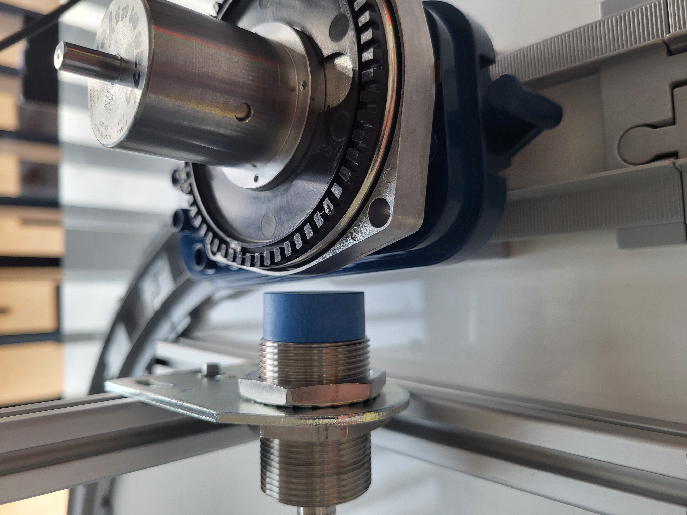
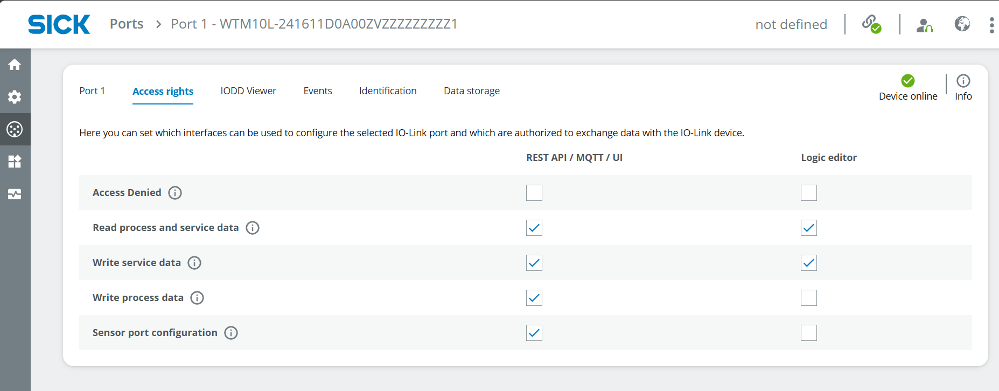
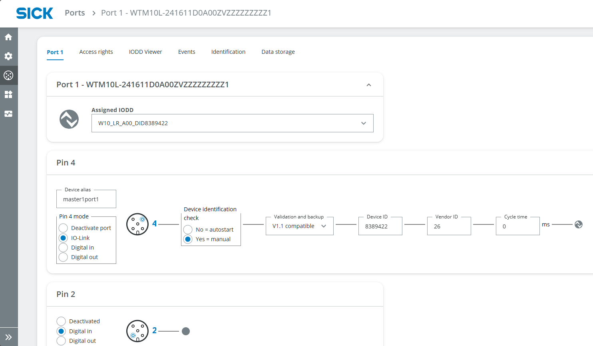
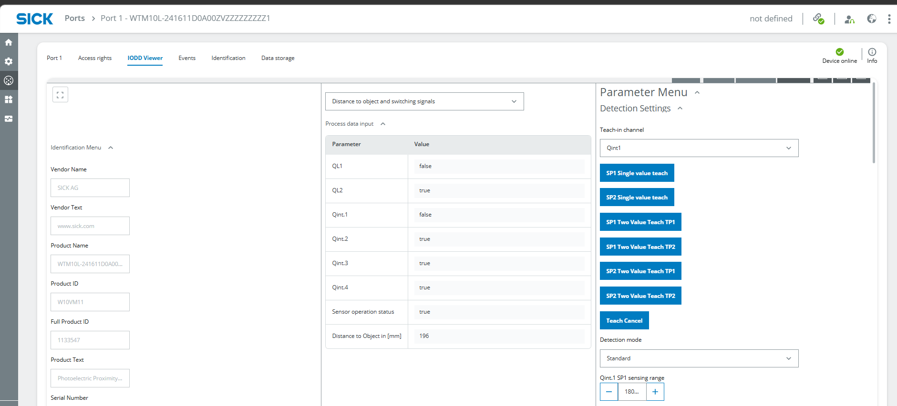
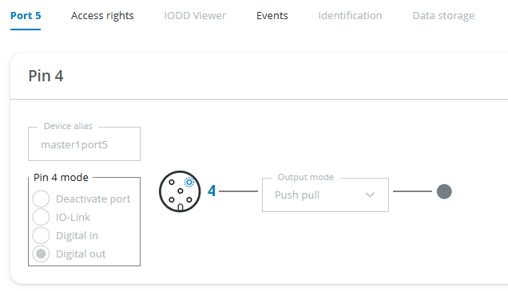
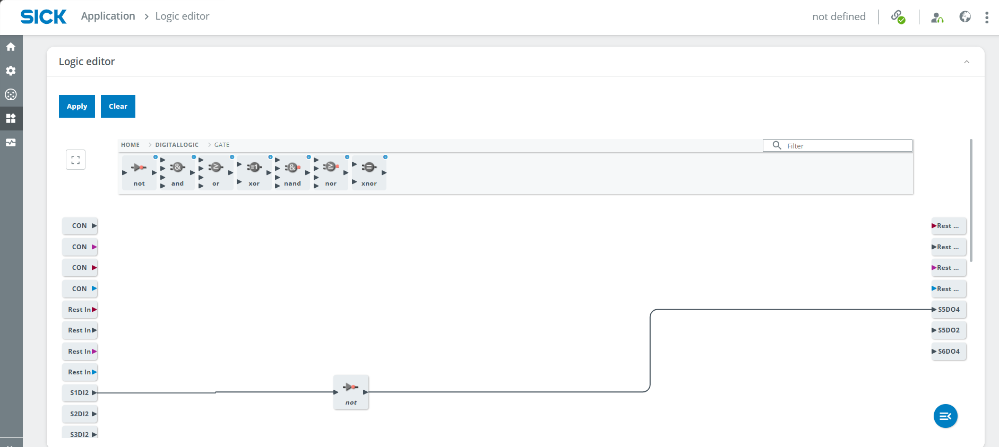
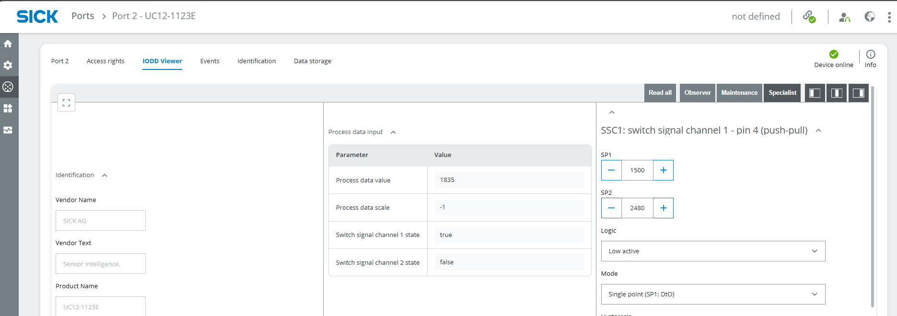

Smart Train-Ringstrecke
| Kurzbeschreibung | Erforderliches Wissensniveau | Voraussichtliche Dauer | Zusätzliche Hardware- und Softwareanforderungen |
|---|---|---|---|
| Bauen Sie ein intelligentes Tor mit verschiedenen Sensoren, die Eisenbahnwaggons und deren Ladung erkennen. | Fortgeschritten | 1–2 Stunden | Montagesatz Batteriebetriebener Zug mit Schienen (Metall-)Gegenstände für Eisenbahnwaggons optional: SLT |

Ziel dieses Projekts ist es, einen Zug zu analysieren, der auf einer Gleisschleife fährt. Dazu kommen verschiedene Sensoren zum Einsatz, die zur Anwesenheitserkennung, zur Abstandsmessung und zur Erkennung von Metallobjekten dienen. Die Ergebnisse können mithilfe von LEDs visualisiert werden. Die Logik wird im Logik-Editor des SIG300-Netzwerkgeräts erstellt.
Anleitung
Einrichtung
- Schließen Sie die 3 Sensoren und die LEDs und/oder das SLT an das SIG300 an.
Beispiel für die Einrichtung einer Verbindung
- SIG300 über USB-C an den PC angeschlossen
- S1: W10
- S2: UC12
- S3: IMC30
- S4: SLT oder gelbe LED
- S5: LED grün (Ausgangszustand: blinkt – da auf IO-Link eingestellt)
- S6: Rote LED (Ausgangszustand: blinkt – da auf IO-Link eingestellt)
- Überlegen Sie sich für jeden Sensor eine sinnvolle Aufgabe und nehmen Sie die Installation vor, indem Sie die Sensoren mithilfe der mitgelieferten Halterungen und Werkzeuge am Befestigungsrahmen des Montagesets befestigen.
Sensorinformationen
Beispiel für die Einrichtung und Aufgaben
- UC12: Oben am Rahmen zur Erkennung des Zuges – bitte die maximale Messreichweite beachten
- W10: Am unteren Ende des anderen vertikalen Balkens, um zu prüfen, ob ein Waggon beladen ist oder nicht – beachte dabei die Mindesthöhe der Objekte auf dem Waggon
- IMC30: Am unteren Ende eines vertikalen Balkens zur Erkennung metallischer Gegenstände auf dem Waggon – bitte beachten Sie die maximale Messreichweite



- Stellen Sie eine Verbindung zur Benutzeroberfläche des SIG300 her, wie unter Erste Schritte beschrieben.
- Melden Sie sich als Service an, Passwort: servicelevel, und klicken Sie auf Standardpasswort beibehalten
IODD-Dateien
- Wählen Sie Anwendung > IODD-Dateiverwaltung und überprüfen Sie, ob die IODD-Dateien für alle Sensoren hochgeladen wurden.

- Falls die IODDs fehlen, können Sie diese über die SICK-Website des Produkts unter der Registerkarte Downloads > Software oder auf IODDfinder.com durch Eingabe der Artikelnummer herunterladen (W10: WTM10x-xx1611xxA00xVxxxxxxxxxx, UC12: 6077702, IMC30: 1079301, SLT060: 6075938).
- Weisen Sie die IODDs den Anschlüssen zu, falls dies noch nicht automatisch erfolgt ist.

Port-Konfiguration
Sensoren (z. B. W10 an S1):
Sie können die Sensoren entweder als digitalen Eingang verwenden, z. B. um einen digitalen Ausgang wie eine LED anzusteuern, ODER den Sensor als IO-Link-Gerät nutzen, um mit anderen IO-Link-Geräten wie dem SLT zu kommunizieren.
- Gehen Sie zu Ports > Port 1, wählen Sie die Registerkarte Zugriffsrechte und setzen Sie die Häkchen wie in der Abbildung gezeigt (relevant sind Prozess- und Servicedaten lesen und Sensorport-Konfiguration)

-
Wechseln Sie zur Registerkarte Port 1, um die Konfiguration wie in der unten abgebildeten Abbildung vorzunehmen (zugewiesenes IODD, IO-Link, Geräteidentifikationsprüfung „Ja“, Version V1.1 ist relevant).
-
Hinweis: Pin 4 ist für SLT (IO-Link) relevant; Pin 2 kann ausschließlich für digitale Ausgänge verwendet werden, z. B. für LEDs (Sensor auf „Digital In“ einstellen)

- Wechseln Sie zur Registerkarte IODD Viewer und wählen Sie oben in der Mitte den Messtyp aus. Den Messwert können Sie bereits ganz unten in der Mitte ablesen.
- Um einen Auslöser bei einem bestimmten Messwert festzulegen, können Sie die Parameter anpassen. Wenn Sie beispielsweise möchten, dass der W10 ausgelöst wird, wenn der Messwert größer als 180 mm ist, suchen Sie die Erkennungseinstellungen und stellen Sie den Qint.1 SP1-Erfassungsbereich auf 180 mm und Hoch aktiv ein.

- Wiederholen Sie diese Schritte für alle Sensoren. Hinweis: Je nach Funktionsprinzip und integrierten Funktionen/Parametern sieht jeder Sensor auf der Registerkarte „IODD Viewer“ etwas anders aus.
Lampen (z. B. LED an S5)
Hinweis: Was die Portkonfiguration angeht, verhält sich das SLT genauso wie ein Sensor. Für einfache digitale Ausgänge (z. B. LEDs) befolgen Sie bitte die nachstehenden Anweisungen.
- Gehen Sie zu Ports > Port 1, wählen Sie die Registerkarte Zugriffsrechte und setzen Sie die Häkchen wie in der Abbildung gezeigt (relevant ist Prozessdaten schreiben).

- Wechseln Sie zur Registerkarte Port 5, um die Konfiguration vorzunehmen. Stellen Sie Pin 4 auf Digital In ein. Je nach Konfiguration des Sensor-Ports in den Zugriffsrechten können Sie zwischen HI und LO umschalten, um zu prüfen, ob die LED funktioniert.

- Wiederholen Sie diesen Vorgang für alle LEDs.
Logik-Editor
Um die Messdaten der Sensoren (digitale Eingänge) und der LEDs (digitale Ausgänge) zu kombinieren, verwenden wir den Logik-Editor. Hinweis: Sie müssen immer auf „Übernehmen“ klicken, damit Ihre Änderungen im Logik-Editor wirksam werden.
- Gehen Sie zu Anwendung > Logik-Editor. Erstellen Sie nun die Logik für alle Sensoren und LEDs entsprechend der zu Beginn festgelegten Konfiguration (z. B. soll die grüne LED aufleuchten, wenn ein Waggon beladen ist). In den folgenden Schritten finden Sie einige Beispiele, an denen Sie sich orientieren können.
Grüne LED leuchtet auf, wenn der Waggon beladen ist
Versuchen Sie zunächst, eine direkte Verbindung zwischen SIDI2 (Pin 2 von W10) und S5DO4 (Pin 4 der LED) herzustellen, indem Sie den Pfeil vom Block auf der linken Seite zum Block auf der rechten Seite ziehen. Je nach Messwert von W10 sollte die LED nun aufleuchten. Sie können Logikblöcke verwenden, um das Ergebnis zu verneinen, z. B. Digitale Logik > Gatter > NOT zwischen den beiden Blöcken

Rote LED leuchtet auf, wenn ein Zug erkannt wird
- Mit dem UC12 lassen sich beliebige Objekte in einem bestimmten Bereich erkennen.
- Montieren Sie den UC12 entsprechend dem Messbereich und der Höhe des zu erfassenden Zuges. Verwenden Sie den IODD Viewer, um das Messergebnis anzuzeigen und eine geeignete Position für den UC12 zu ermitteln.
- Passen Sie den Auslösewert an, indem Sie den Wert unter IODD Viewer > SSC1: Schaltsignalkanal 1 > SP1 ändern und die Logik auf Low aktiv einstellen. Hinweis: Der Wert ist kein Millimeterwert.

- Gehen Sie zum Logik-Editor und verbinden Sie S2I2 (Port 2 des UC12) mit S6DO4 (Pin 4 der roten LED). Ein NOT-Gatter ist nicht erforderlich, da die Logik low-aktiv ist.

- Klicken Sie auf Übernehmen und prüfen Sie, ob es funktioniert.
Die gelbe LED leuchtet auf, wenn ein Metallgegenstand erkannt wird
- Mit dem IMC30 lassen sich Metallgegenstände in einem bestimmten Bereich aufspüren.
- Montieren Sie den IMC30 entsprechend dem Messbereich und dem Abstand der zu messenden Metallobjekte zum Tor. Verwenden Sie den IODD Viewer, um das Messergebnis anzuzeigen und eine geeignete Position für den IMC30 zu ermitteln. Es müssen keine Parameter eingestellt werden.
- Gehen Sie zum Logik-Editor und verbinden Sie S3I2 (Port 2 des UC12) mit S4DO4 (Pin 4 der gelben LED).

- Klicken Sie auf Übernehmen und prüfen Sie, ob es funktioniert.
Lass eine beliebige LED nach dem Auslösen 3 Sekunden lang leuchten
- Fügen Sie im Logik-Editor einen Delay-Block ein und stellen Sie die OffDelay auf 3000 (ms) ein, um das Erlöschen der Lampe um 3 Sekunden zu verzögern

Zurücksetzen
Wenn Sie Ihr Projekt abgeschlossen haben, können Sie im Logic Editor auf Löschen klicken, um alle Blöcke und Verbindungen zu entfernen. Bitte beachten Sie, dass durch ein Zurücksetzen auf die Werkseinstellungen auch die hochgeladenen IODD-Dateien gelöscht werden.